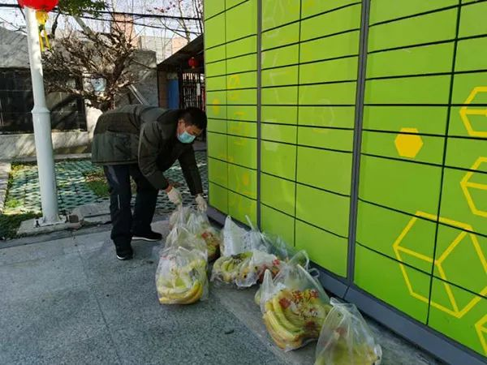

在武汉，我们自发为独居老人买菜送菜
原文链接 备份链接 澎湃新闻记者 喻琰 一张黑底海报，画中央是一位老人，标题是，寻找“无法取菜的”独居老人。 武汉封闭社区以来，买菜做饭成了许多独居老人面临的难题。他们不会用手机团购，儿女也不在身边。 26岁的武汉人小鱼（化名）和志愿者在 …
澎湃新闻记者 邓雅菲 实习生 苏笑语
“借四节电池的人家又送来他家自己做的馒头，说是看见我在群里羡慕别人家的了，正好配酸菜鱼片。鲜鱼也是他们上次弄好送来的，还外加一大袋他们做的手工牛轧糖，奶香十足，不甜腻，还有花生的酥脆，一口气能吃五六颗……”
家住武汉市东西湖区开屏里社区明珠小区的刘洪，读着邻居记录在微信朋友圈的日常点滴，也想起了自己刚刚与邻居间发生的几件暖心小事。
“武汉人其实是蛮可爱的，为人直爽，有江湖气，帮起人来热心快肠，但是武汉人又特别爱面子，要味，生怕给别人添麻烦了！”3月7日，刘洪向澎湃新闻（www.thepaper.cn）讲述了几件邻里间互相帮助、又互相“讲客气”的小故事。

工作人员冒雨给居民发放团购的肉品。本文图片均由受访者提供
一包各家凑起来的爱心菜
刘洪的一位邻居李平（化名）两年前做过换肾手术，在2019年年底又出现了排异反应。过年前，李平的爱人回老家探亲，没想到接下来武汉就封城了，夫妻俩被迫分隔两地。
小区实行封闭式管理后，他得走到小区外面领取生活物资，可他家住7楼，上下楼实在吃不消。
担心老公感染却又身在异地，李平的妻子心急如焚，“我老公属于易感人群，平常连感冒都严防死守，疫情下更是难上加难。”
刘洪知道了这个情况，主动联系这位邻居，给他凑齐了一包能至少吃两周、内容丰富的爱心菜。
这包爱心菜里都有些什么呢？牛肉——刘洪女儿好不容易大清早在“盒马”抢购到的、蔬菜（白菜、胡萝卜、青椒、黄瓜、豆角等等）——来自社区分发给她家的爱心菜、水果——来自社区志愿者、30枚鸡蛋——住在刘洪家楼下的老爷爷一次性团购了很多匀出来的。
在凑这30枚鸡蛋时，老爷爷硬是不肯收刘洪的钱，说“帮邻居一把不收钱”，但刘洪还是执意要给他。
凑好这包爱心菜后，社区志愿者陈琼芳在群里自告奋勇去送菜，陈琼芳把二十多斤的菜和水果一口气就拎上了七楼，气喘吁吁。
李平的妻子说，老公看着小陈一口气拎了那么重的菜上楼，都惊呆了，小陈当时还说，“我不比小伙子的力气差吧，你家里现在菜多，我心里就踏实了！”
除了爱心菜，李平在疫情期间还受到了社区自发组织的志愿团队的帮助。
疫情期间，他需要到医院做定期检查，一位有通行证的志愿者每次到他家接他去医院，等他做完检查，再把他接回来。

物业挨栋给60岁以上的业主把免费爱心菜送到家。
“武汉人要味，怕给别人添麻烦”
刘洪的楼下住着一位老师傅，今年七十多岁，和老伴相依为命。
“年纪大了的人，对于智能手机软件一窍不通，在别人的反复指导下，才学会用智能手机打电话和微信转账。”刘洪说，“但是疫情期间购买物资需要用软件或者微信群聊下单，旁人看来再简单不过的操作却难住了老人家。”
小区实行封闭式管理后，刘洪每次网购一些物资，也顺便问一下老师傅有什么需要。
有一次，老人想要买一些盐、面条、肥皂和消毒液，但社区物资购买群只能买食物，刚好刘洪家里有现成的，就把自己家里的肥皂和消毒液打包起来，送给了老人。
当老人提出要付给刘洪钱时，她赶紧推辞：“哎呀，我只是想做好事，不能变成卖东西撒。”
尽管这样，老人还是执意要付钱，不仅要给，还每次都要多给。有一次，刘洪买了206元的东西，老人就要转给刘洪230元。刘洪不收，微信转账又被退回去，老人就再转。
来来去去，刘洪“投降”了，她笑着和老人商量：“这样，我们各让一步，你转给我210元，230元我是绝对不会收的。你也安心，我也安心。”终于和老人达成共识。

邻居在微信朋友圈记录下邻里互助日常。
刘洪还听说，社区志愿者刘京倩帮一位独自在家带孩子的女士送菜。那位女士的老公之前去外地工作，又碰上了武汉封城，已经四十多天没能回家，刘京倩知道她一个人照管孩子不方便下楼领物资，就每次都热心地把物资送到她家门口。
那位女士不知道如何感激刘京倩，就分出自己的一部分物资放在不远的刘京倩家门口。刘京倩回家看到了，就又送还回去，两人推让了好几次。刘京倩开玩笑说，“我估计这菜放门口放坏了都不会被拿进去。”
在刘洪口中，这就是武汉人平日里的样子，“武汉人嘛，就是这样，爱面子，要味，喜欢讲客气，生怕给别人添麻烦！但是邻居之间互相搭把手，本来就是应该的嘛。”

社区工作人员在发放水果。
本期编辑 周玉华
推荐阅读


原文链接 备份链接 澎湃新闻记者 喻琰 一张黑底海报，画中央是一位老人，标题是，寻找“无法取菜的”独居老人。 武汉封闭社区以来，买菜做饭成了许多独居老人面临的难题。他们不会用手机团购，儿女也不在身边。 26岁的武汉人小鱼（化名）和志愿者在 …
原文链接 备份链接 黄伟说，这样的民间接力渠道效率是最高的，也不需要二次转运，“（菜）上午到，下午就直接发出去了，晚上就上桌了。” 文 | 谢婵 编辑 | 小豆 爱心菜被讨论了很久。家在武汉的陈维佳想上网看看，有没有人收到过捐赠的爱心菜。 …
原文链接 备份链接 【财新网】（记者 包志明 萧辉 高昱）2月24日，有网民通过网络转发视频称：“西马路敬老院有120个老人感染新冠肺炎”，引起舆论关注。据财新记者探访，涉事养老院为武汉市江岸区西马街社区椿萱里老人照护中心，2月23日有八 …
原文链接 备份链接 医生出身的作家池莉身处武汉，自2月3日以来在“夜光杯”连发三篇文章，呼吁隔离，坚持不松懈，“这个时刻，理性冷静是我们的力量，勇敢顽强是我们的必须，克服畏惧，迎接曙光。” 这个时刻，天正暗下来，黄昏将近，我站在窗前，朝侧 …
原文链接 备份链接 昨天天气非常好，春和日丽，轻风细软，吹在脸上已经没了寒意。今天是多云，常见的那种春阴天气，到黄昏时分，太阳终于又出来了，看来明天会是晴天。 楼下的红梅枝头已经缀满了花蕾，春天是真的快来了。 我们小区有些年头了，所以有很 …